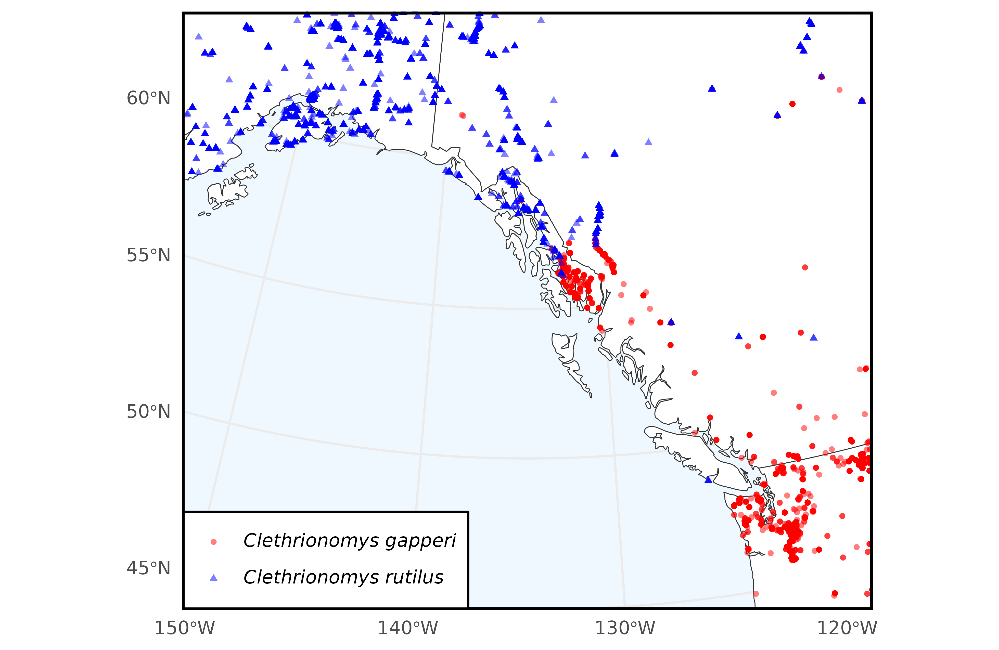
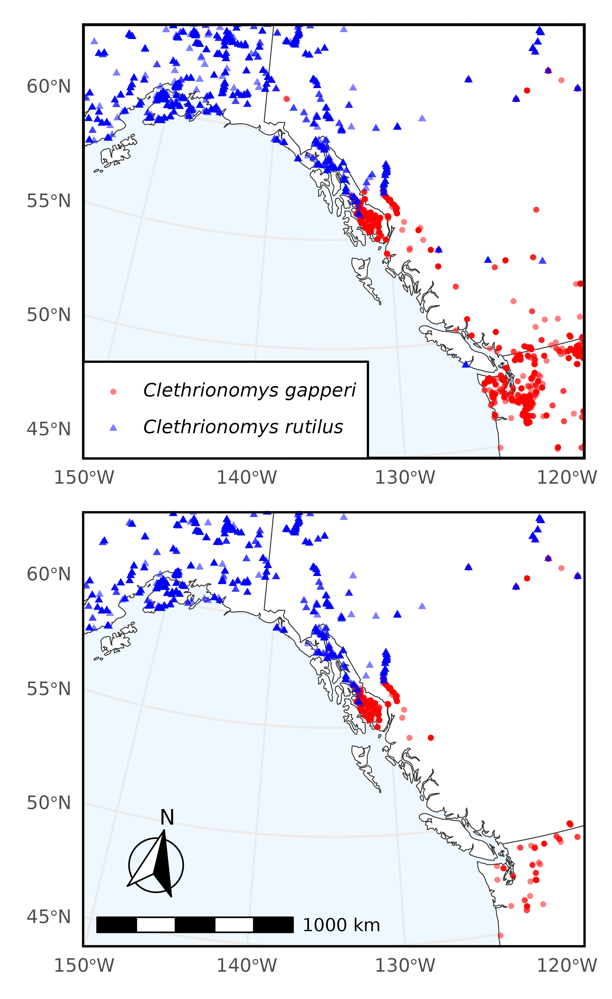

In this example we query Arctos for specimens of Clethrionomys gapperi (Southern red-backed vole) and Clethrionomys rutilus (Northern red-backed vole) that have frozen tissue.
To begin, make sure to load the library:
# install.packages("ArctosR")
# install.packages("ggplot2")
# install.packages("ggspatial")
# install.packages("ggtext")
# install.packages("maps")
# install.packages("patchwork")
# install.packages("sf")
library(ArctosR)
library(ggplot2)
library(ggspatial)
library(ggtext)
library(maps)
library(patchwork)
library(sf)
#> Linking to GEOS 3.12.1, GDAL 3.8.4, PROJ 9.4.0; sf_use_s2() is TRUEExploring Arctos options
First, we can view all parameters we can use to search by on Arctos:
# Request a list of all query parameters.
query_params <- get_query_parameters()
# Explore all parameters.
View(query_params)The query parameter we are interested in using is:
scientific_name.
Next, we can view a list of all parameters we can ask Arctos to return by calling:
# Request a list of all result parameters. These are the names that can show up
# as columns in a dataframe returned by ArctosR.
result_params <- get_result_parameters()
# Explore all parameters.
View(result_params)The parameters we are interested in returning are:
dec_lat, dec_long, and parts.
Requesting data
cols <- list("dec_lat", "dec_long", "parts")
# Southern red-backed vole
gapperi_query1 <- get_records(
scientific_name = "Clethrionomys gapperi",
columns = cols,
all_records = TRUE,
api_key = YOUR_API_KEY
)
gapperi_query2 <- get_records(
scientific_name = "Myodes gapperi",
columns = cols,
all_records = TRUE,
api_key = YOUR_API_KEY
)
# Northern red-backed vole
rutilus_query1 <- get_records(
scientific_name = "Clethrionomys rutilus",
columns = cols,
all_records = TRUE,
api_key = YOUR_API_KEY
)
rutilus_query2 <- get_records(
scientific_name = "Myodes rutilus",
columns = cols,
all_records = TRUE,
api_key = YOUR_API_KEY
)
gapperi_df <- rbind(
response_data(gapperi_query1),
response_data(gapperi_query2)
)
rutilus_df <- rbind(
response_data(rutilus_query1),
response_data(rutilus_query2)
)Now, we use the ggplot2 package to plot the occurrence data we downloaded.
# Plot of overall species ranges
plot_map <- map_data("world", region=c("USA", "Canada"))
vole1 <- ggplot(plot_map, aes(long, lat)) +
geom_polygon(
aes(group = group), fill = "white", color = "gray20",
linewidth = .2
) +
geom_jitter(
data = gapperi_df,
aes(x = as.numeric(dec_long), y = as.numeric(dec_lat),
color = "C. gapperi", shape = "C. gapperi"),
alpha = .5, size = 1.0
) +
geom_jitter(
data = rutilus_df,
aes(x = as.numeric(dec_long), y = as.numeric(dec_lat),
color = "C. rutilus", shape = "C. rutilus"),
alpha = .5, size = 1.0
) +
scale_color_manual(
values = c("C. gapperi" = "red", "C. rutilus" = "blue"),
labels = c("*Clethrionomys gapperi*", "*Clethrionomys rutilus*")
) +
scale_shape_manual(
values = c("C. gapperi" = 16, "C. rutilus" = 17),
labels = c("*Clethrionomys gapperi*", "*Clethrionomys rutilus*")
) +
labs(
# title = "Filtering *C. gapperi* and *C. rutilus* by tissue availability",
color = "Species", shape = "Species", x = NULL, y = NULL
) +
coord_sf(
crs = "+proj=lcc +lat_1=52 +lat_2=68 +lon_0=-134.5 +datum=WGS84",
xlim = c(-155, -114),
ylim = c(45, 65),
default_crs = sf::st_crs(4326),
expand = FALSE
) +
theme_minimal() +
theme(
panel.background = element_rect(fill = "aliceblue"),
panel.border = element_rect(color = "black", fill = NA, linewidth = 1.25),
legend.position = c(0.0025, 0.0025),
legend.justification = c(0, 0),
legend.background = element_rect(fill = "white"),
legend.text = element_markdown(),
legend.title=element_blank()
)
ggsave(
filename = "figures/vole1.png",
plot = vole1,
width = 6.53,
height = 4.25,
dpi = 600,
create.dir = TRUE
)
#> Warning: Removed 1197 rows containing missing values or values outside the scale range
#> (`geom_point()`).
#> Warning: Removed 1043 rows containing missing values or values outside the scale range
#> (`geom_point()`).
Next, we filter our original download by records which have associated frozen tissue.
gapperi_df_tissue <- gapperi_df[
grepl("frozen", gapperi_df$parts, ignore.case = TRUE, perl = TRUE), ]
rutilus_df_tissue <- rutilus_df[
grepl("frozen", rutilus_df$parts, ignore.case = TRUE, perl = TRUE), ]
nrow(gapperi_df_tissue)
#> [1] 3778
nrow(rutilus_df_tissue)
#> [1] 7121Now we plot only the coordinates of records with frozen tissue. This information can be used to filter to specimens only in geographic proximity and with frozen tissue which can be analyzed.
# Plot of overall species ranges, filtering by specimens with frozen tissue
vole2 <- ggplot(plot_map, aes(long, lat)) +
geom_polygon(
aes(group = group), fill = "white", color = "gray20",
linewidth = .2
) +
geom_jitter(
data = gapperi_df_tissue,
aes(x = as.numeric(dec_long), y = as.numeric(dec_lat),
color = "C. gapperi", shape = "C. gapperi"),
alpha = .5, size = 1.0
) +
geom_jitter(
data = rutilus_df_tissue,
aes(x = as.numeric(dec_long), y = as.numeric(dec_lat),
color = "C. rutilus", shape = "C. rutilus"),
alpha = .5, size = 1.0
) +
scale_color_manual(
values = c("C. gapperi" = "red", "C. rutilus" = "blue"),
labels = c("*Clethrionomys gapperi*", "*Clethrionomys rutilus*")
) +
scale_shape_manual(
values = c("C. gapperi" = 16, "C. rutilus" = 17),
labels = c("*Clethrionomys gapperi*", "*Clethrionomys rutilus*")
) +
labs(
color = "Species", shape = "Species", x = NULL, y = NULL
) +
coord_sf(
crs = "+proj=lcc +lat_1=52 +lat_2=68 +lon_0=-134.5 +datum=WGS84",
xlim = c(-155, -114),
ylim = c(45, 65),
default_crs = sf::st_crs(4326),
expand = FALSE
) +
annotation_scale(
location = "bl",
width_hint = 0.4
) +
annotation_north_arrow(
location = "bl",
which_north = "true",
pad_x = unit(0.2, "in"),
pad_y = unit(0.3, "in"),
style = north_arrow_fancy_orienteering
) +
theme_minimal() +
theme(
panel.background = element_rect(fill = "aliceblue"),
panel.border = element_rect(color = "black", fill = NA, linewidth = 1),
legend.position = "none"
)
ggsave(
filename = "figures/vole2.png",
plot = vole2,
width = 6.53,
height = 6.53,
dpi = 600,
create.dir = TRUE
)
#> Warning: Removed 342 rows containing missing values or values outside the scale range
#> (`geom_point()`).
#> Warning: Removed 255 rows containing missing values or values outside the scale range
#> (`geom_point()`).
ggsave(
filename = "figures/voles_combined.png",
plot = vole1/vole2,
width = 4,
height = 6.53,
dpi = 600,
create.dir = TRUE
)
#> Warning: Removed 1197 rows containing missing values or values outside the scale range
#> (`geom_point()`).
#> Warning: Removed 1043 rows containing missing values or values outside the scale range
#> (`geom_point()`).
#> Warning: Removed 342 rows containing missing values or values outside the scale range
#> (`geom_point()`).
#> Warning: Removed 255 rows containing missing values or values outside the scale range
#> (`geom_point()`).